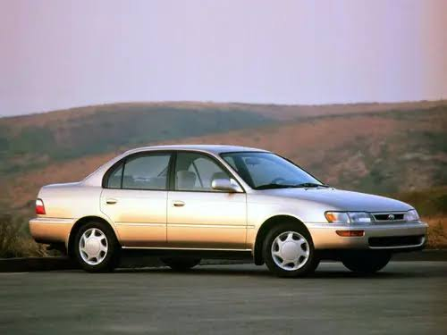
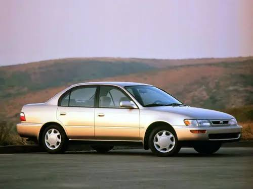
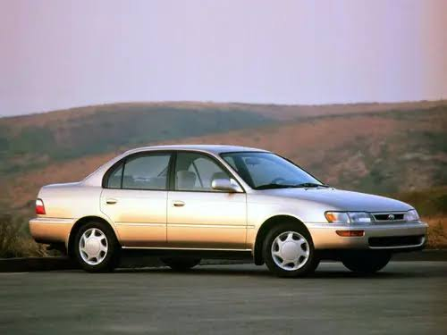
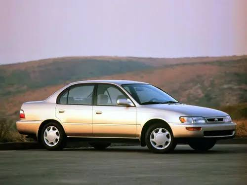

 

O Toyota Corolla 1995, conhecido pela sua confiabilidade, apresentava opções de motor 1.6L ou 1.8L 16V (como o 7A-FE) com injeção multiponto, oferecendo bom equilíbrio entre desempenho e economia, com versões mecânicas e automáticas de 4 marchas, suspensão McPherson e freios a disco/tambor, destacando-se pela durabilidade, conforto (direção hidráulica, ar-condicionado) e design robusto para a época.
Motorização: Motores 1.6L ou 1.8L 16V, com alimentação por injeção eletrônica multiponto.
Transmissão: Opções de câmbio manual e automático de 4 velocidades (A245E).
Desempenho (Versão 1.8L): Cerca de 115 cv, torque de 15,9 kgfm, aceleração de 0-100 km/h em ~13,5s e velocidade máxima de ~179 km/h.
Suspensão: Independente nas quatro rodas com sistema McPherson, garantindo conforto e boa estabilidade.
Freios: Discos ventilados na dianteira e tambores na traseira.
Conforto e Conveniência (Versões Superiores): Direção hidráulica, ar-condicionado, vidros e travas elétricas, rádio CD Player.
Design: Robusto, com dimensões compactas para a época, porta-malas razoável (cerca de 321L), e opções de acabamento como DX e SE-G.
Foco: Combinação de confiabilidade mecânica, economia de combustível e conforto, sendo um carro muito popular e durável.
Em resumo, o Corolla 95 é um clássico moderno valorizado pela sua mecânica confiável e bons acabamentos, representando um carro sólido e econômico para o uso diário e familiar.